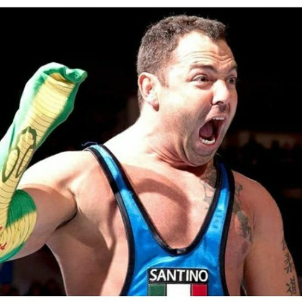

⭐ Recensione del Mese
Recensore: Santino Marella "The Milan Miracle"⭐⭐⭐⭐⭐ (Approvata dalla Famiglia)
"Ehi, paisà, ascolta bene. Ho girato tutta la East Coast, da Chicago a New York, e di affari me ne intendo. Quando mi hanno detto che il mio vecchio amico Nunzio aveva aperto questa pizzeria, sono venuto subito a controllare la situazione insieme ai miei ragazzi.
Beh, che dire... Fuggedaboutit! Appena entrato ho sentito quel profumo di mozzarell' e gabagool che ti fa subito sentire a casa. Ho ordinato la Arrivederci e vi giuro: è stata la mossa più letale che abbia mai visto fuori dal ring. Piccante al punto giusto, croccante come un colpo di piede di porco e carica come un camion pieno di merce fresca.
Qui non si scherza, capisce? Niente diete, niente insalatine tristi, solo roba seria per gente che sa come si sta al mondo. Se passate in zona e non vi fermate a mangiare da Nunzio, beh... diciamo che sarebbe un vero peccato. E noi della Famiglia non vogliamo che succedano spiacevoli incidenti, giusto?
Bada-bing, bada-boom. Ci vediamo al prossimo carico!"